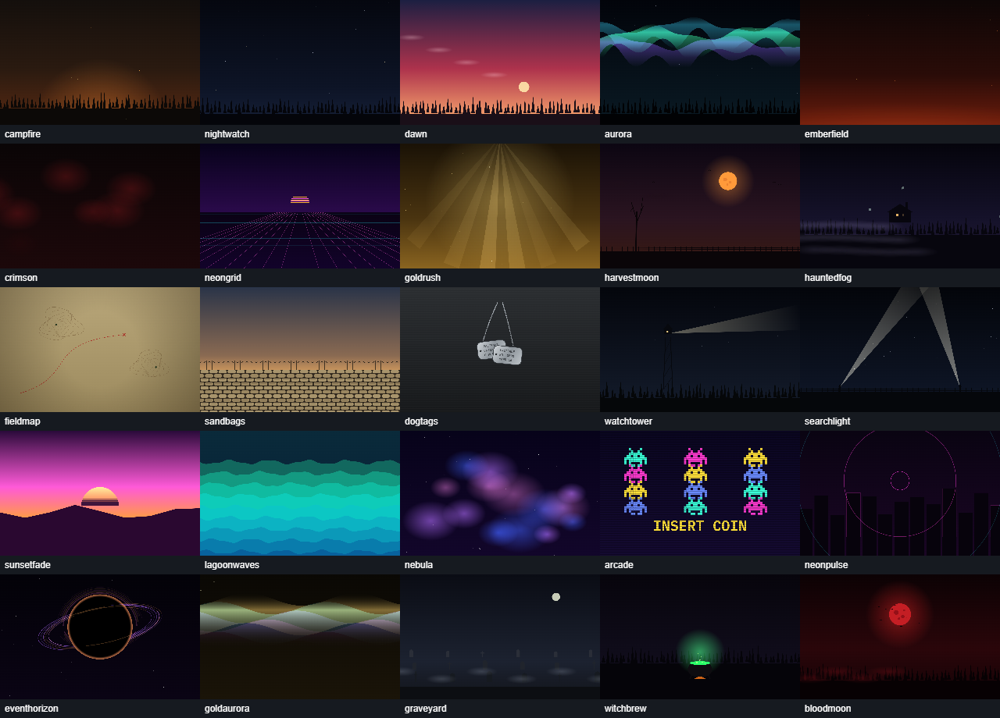
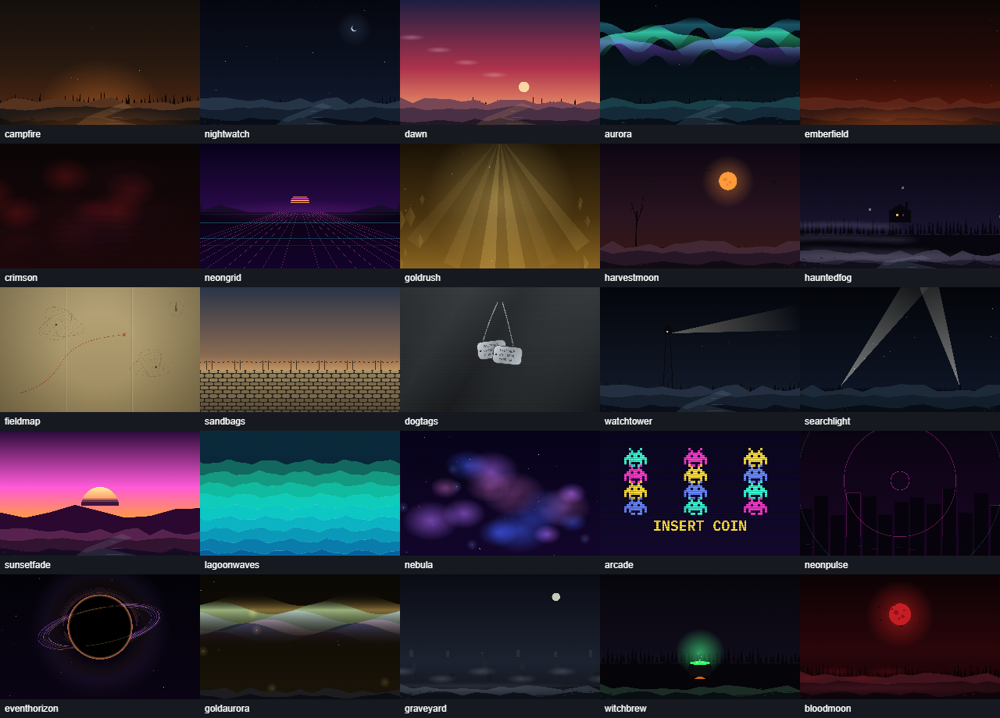
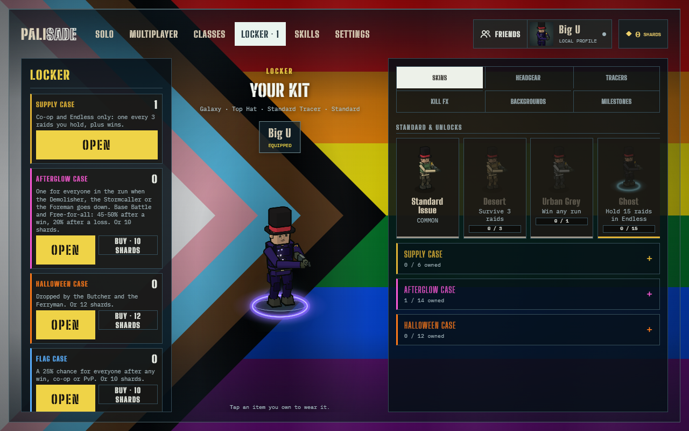
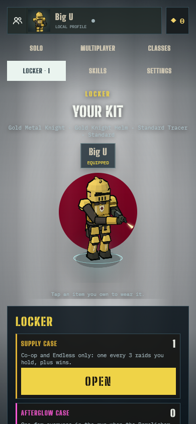

Local presentation candidate. Full-screen flags, cached scenic detail and grounded character motion. Nothing has been published. Implementation, testing, performance and rollback report.
Matched eight-second renderer fixtures: idle, walk, sprint, backpedal, strafe/turn, stop, recoil and bolt/pump. Use the video controls to compare them. These are controlled pose demonstrations, not physical-phone recordings.




All 32 portrait flags · All 32 landscape flags · Portrait scenery · Cosmetics in 54 movement/downed poses · Backup and restore manifest